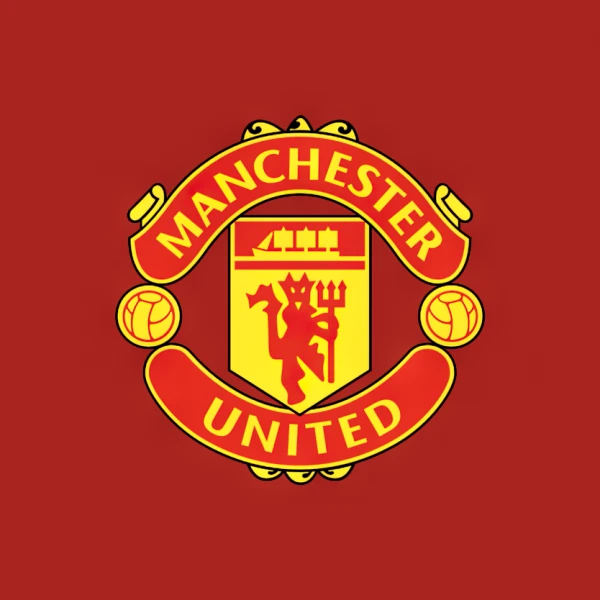

Another thing that I like is cars, and especially big cars like for example Lexus lx 570.

This is my digital portfolio that will be explaining my characteristics.
First things first I will be talking about myself.
I am called Mansuastus Mbeki. I am a boy who was born in Russia and I live in Kenya.
I go to:
If you don't know what this is, it Makini School.
I am in class 8 Galana, of 23 students. My class teacher is called Mr. Antony. But I prefer calling him Mr. Antoin.
One of my Favourite clubs is Manchester United.
Another thing that I like is cars, and especially big cars like for example Lexus lx 570.
And also sports cars such as Porche GT3 911.

If I was to be honest i like fast and big cars.
I also like to play football and I wish to abroad to play professional football.
And my goats have to be:

Like when you look at these three you already know they are the best.
There are also other things I like such as food.
Some foods I may like is: chips,chicken,sausage,smokies,chapati and many more.
But there are some that I personally think is disgusting or tastes bad or maybe both like for example: snails,slugs,peanuts and all types of nuts,honey( to me I don't think it is that bad but it is too sweet) and others.